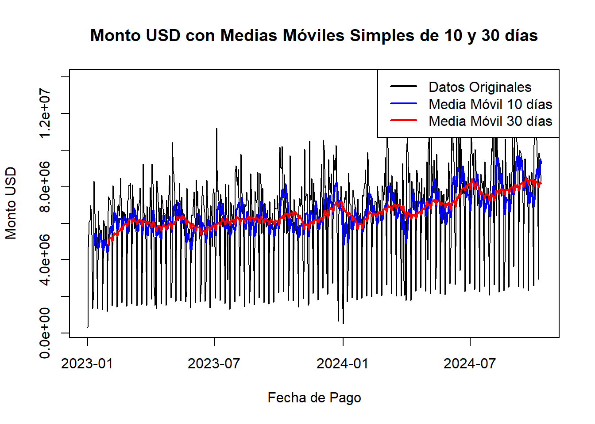
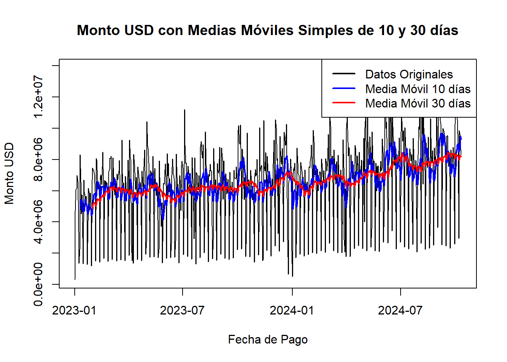

2 DESCRIPCIÓN DE LAS SERIES DE TIEMPO
A continuación se presenta la base incluyendo la variable en el tiempo, la aproximación en promedios móviles, en rezagos y en estacionalidad. Todo lo anterior, a través de funciones y gráficas que permitan detectar patrones y ciclos de la variable.
## Rows: 529,464
## Columns: 7
## $ Fecha_Pago [3m[38;5;246m<date>[39m[23m 2023-01-01, 2023-01-01, 2023-01-01, 2023-01-01, 2023-01-01, 202…
## $ Pais_Origen [3m[38;5;246m<chr>[39m[23m "AE", "AE", "AT", "AU", "AU", "BE", "BE", "BR", "BR", "BR", "BR"…
## $ Fecha_Origen [3m[38;5;246m<date>[39m[23m 2022-12-31, 2023-01-01, 2023-01-01, 2022-12-31, 2023-01-01, 202…
## $ Canal [3m[38;5;246m<chr>[39m[23m "APN", "APN", "APN", "APN", "APN", "RedPropia", "APN", "APN", "R…
## $ Transacciones_USD [3m[38;5;246m<dbl>[39m[23m 1, 3, 3, 3, 18, 1, 1, 12, 2, 35, 1, 2, 2, 17, 2, 1, 1, 1, 22, 1,…
## $ Monto_USD [3m[38;5;246m<dbl>[39m[23m 369.33, 471.03, 1146.18, 1781.49, 13945.66, 48.23, 418.29, 2206.…
## $ Monto_COP [3m[38;5;246m<dbl>[39m[23m 1765896, 2252157, 5480357, 8518037, 66679489, 230602, 2000000, 1…Como se puede observar en la tabla resumen la base de datos se compone de 7 variables:
2 tipo fecha: “Fecha_pago” y “Fecha_Origen”, 3 numericas: “Número_transacciones”, “Monto_USD” y “Monto_COP” y 2 tipo texto: “Pais_Origen” y “Canal”.
Con el objetivo de observar el comportamiento de las remesas en el tiempo, se realizará la descripción por las dos variables tipo fecha.
2.1 Serie de tiempo por Fecha de Pago
Se agrupa el monto en dólares por la variable objetivo.
Se verifica el tipo de variable.
## [1] "ts"La fecha inicial
## [1] 2023 1La fecha final
## [1] 2024 284Se puede evidenciar que comienza el día 1 del 2023 y finaliza el día 284 del año 2024.
Se valido que las fechas fueran consecutivas y no existieran fechas faltantes.
fecha_min <- min(Datos_FP$Fecha_Pago)
fecha_max <- max(Datos_FP$Fecha_Pago)
fechas_completas <- seq(from = fecha_min, to = fecha_max, by = "day")
fechas_faltantes <- setdiff(fechas_completas, Datos_FP$Fecha_Pago)
fechas_faltantes## numeric(0)A continuación se realiza el gráfico del monto en dólares por fecha de pago.

2.1.1 Uso de la librería “XTS”
A pesar de conocer que la base es regular con periodicidad diaria, se decidió usar la libreria “XTS” por la utilización de las fechas exactas.
# Crear la serie de tiempo
serie_xts <- xts(Datos_FP$Monto_USD, order.by = Datos_FP$Fecha_Pago)
head(serie_xts)## [,1]
## 2023-01-01 314473.1
## 2023-01-02 4700346.1
## 2023-01-03 6069974.1
## 2023-01-04 6164948.9
## 2023-01-05 6986643.0
## 2023-01-06 6616416.02.1.2 Gráfico de rezago para la serie de tiempo

Según la gráfica parece que existe algo de autocorrelación hasta el rezago 4, para mayores rezagos esa relación se vuelve más difusa.
2.1.3 Promedios móviles
2.1.3.1 Promedio Móvil Simple (SMA)
El promedio móvil simple es una técnica estadística utilizada para suavizar series de tiempo mediante la creación de un promedio de los valores en un intervalo específico de tiempo. Permite facilitar la identificación de tendencias subyacentes al hacer que las variaciones estacionales y aleatorias sean menos evidentes.
Una de sus ventajas es que proporciona una visión clara de la tendencia general de los datos a lo largo del tiempo.
SMA se usa principalmente en análisis financiero, como en el seguimiento de precios de acciones, proyecciones de ventas, y otras métricas de negocio.
2.1.3.2 Promedio Móvil Exponencial (EMA).
Es similar al promedio móvil simple (SMA), pero con un enfoque que da más peso a los datos más recientes. Este puede ser más representativo de la tendencia actual en series de tiempo con alta volatilidad.
Se aplica en diversas áreas de análisis de datos, como en el monitoreo de ventas, pronósticos de demanda, y otros indicadores de rendimiento.

En las gráficas se puede observar como los promedios eliminan el ruido de los picos ocasionados los días de fin de semana, donde se realizan menos pagos de remesas sabados, domingos y festivos y mayores pagos en los días viernes.
2.2 Serie de tiempo por Fecha de Origen
Se agrupa el monto en dólares por la variable objetivo.
2.2.1 Uso de la librería “XTS”
Por ser una base irregular con periodicidad diaria, se decidió usar la libreria “XTS” por la utilización de las fechas exactas.
# Crear la serie de tiempo
serie_xts1 <- xts(Datos_FO$Monto_USD, order.by = Datos_FO$Fecha_Origen)
head(serie_xts1)## [,1]
## 2018-11-20 658.18
## 2019-02-04 253.15
## 2019-05-22 405.03
## 2019-08-10 250.02
## 2019-12-13 598.19
## 2020-02-24 20.70
Se pueden obvervar casos atipicos desde 20 de noviembre de 2018, que corresponden a remesas que fueron reclamadas muy posteriormente a la originación, ya que las fechas de pago estan desde el 01 de octubre de 2023, y que debieron surtir un proceso especial.
Se procede a realizar la limpieza de datos atipicos, dejando unicamente las remesas que hayan sido originadas hasta 30 dias antes del pago:
2.2.2 Gráfico de rezago para la serie de tiempo
Según las gráficas parece al igual que en el analisis con fecha de pago, que existe algo de autocorrelación en los primeros rezagos, pero para mayores rezagos esa relación se vuelve más difusa.